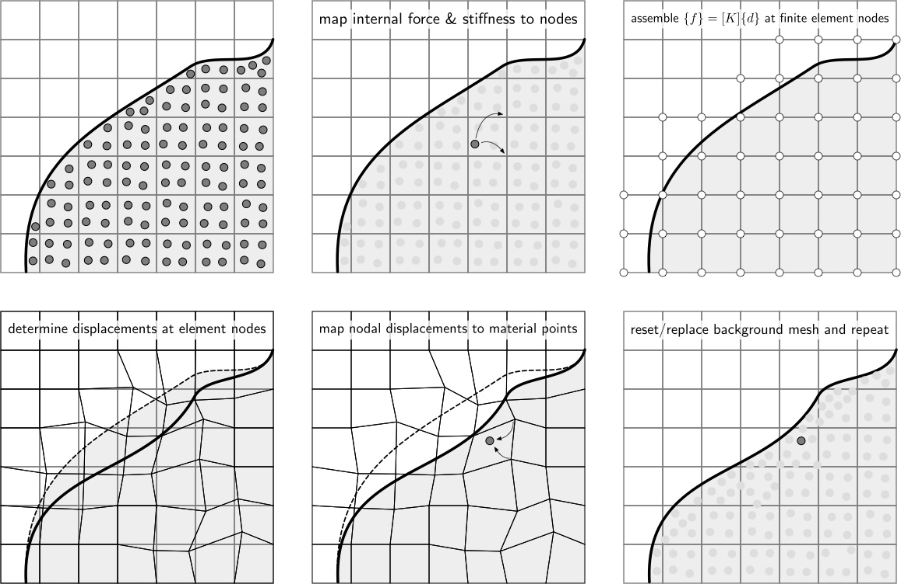

Formulation - AMPLE - A Material Point Learning Environment
AMPLE: A Material Point Learning Environment
Formulation¶
AMPLE is based on a number of published papers that describe fully the underlying continuum mechanics framework, material point discretisation approach and the numerical solution method. In particular, Charlton et al.’s 2017 Generalised Interpolation Material Point Method paper [1] provides the scientific basis of AMPLE. Key aspects of the formulation are described below.
Equilibrium¶
AMPLE adopts an updated Lagrangian weak statement of equilibrium for quasi-static analysis. The Galerkin form of the weak statement of equilibrium over each background grid element, E, can be expressed as
where \(\varphi_t\) is the motion of the material body which is subjected to tractions, \(\{t\}\), on its boundary, \(\partial E\) with surface, \(s\), and body forces, \(\{b\}\), acting over its volume, \(v\). These external forces lead to a Cauchy stress field, \(\{\sigma\}\), through the body. \([\nabla_x S_{vp}]\) is the tensorial form of the strain-displacement matrix containing derivatives of the basis functions, \([S_{vp}]\), with respect to the updated coordinates, \(\{x\}\). The first term in the equilibrium equation is the internal force within an element and the combination of the second (body forces) and third (tractions) terms is the external force vector. The equilibrium equation is non-linear in terms of the unknown nodal displacements and can be efficiently solved using the standard implicit Newton-Raphson procedure (see below).
Large deformation mechanics¶
In large deformation analysis the deformation gradient provides the fundamental link between the original and the deformed states of a body. For elasto-plasticity this deformation gradient can be multiplicatively decomposed into elastic and plastic components. In AMPLE, this multiplicative decomposition is combined with a linear relationship between elastic logarithmic (or Hencky) strains and Kirchhoff stress. This allows any small strain constitutive model to be included within the code without modification.
Constitutive model¶
Constitutive models provide the fundamental link between stress and strain within any stress analysis algorithm. Two constitutive models are included within AMPLE:
- linear elasticity; and
- linear elastic-perfectly plasticity with an associated flow von Mises yield envelope.
It is straightforward to include other constitutive models.
Material point discretisation¶
In material point methods the physical domain is discretised by a number of material points. These points are used to numerically approximate the stiffness of the elements in the background mesh, essentially replacing the conventional Gauss points (or other integration method). The key difference between material point and finite element methods is that these integration points move relative to the background mesh rather than being directly coupled to the positions of the background grid nodes.
The internal force contribution of a single material point to the background mesh can be expressed as
where v_p the volume associated with the material point. Linearising the internal force with respect to the unknown nodal displacements gives the stiffness contribution of a single material point to the background mesh as
where \([D]\) is the stiffness associated with the material point. Note the constitutive models included within AMPLE return the algorithmic consistent tangent that ensures optimum convergence of the Newton process that minimises the global out of balance forces. As with the finite element method, in the material point method the individual contributions of the material points must be assembled into a global stiffness matrix and internal force vector.
Boundary conditions¶
As with other numerical methods that decouple the physical boundaries of the analysis domain with the computational mesh, boundary conditions are one of the more challenging aspects of the material point method.
In implicit material point formulations displacement boundary conditions must, in some way, be imposed on the background mesh. In AMPLE displacement boundary conditions are imposed directly on the background mesh. This restricts the forms of boundaries that can be modelled in the method; see our publications on boundary conditions for how to extend to more complex cases.
Two types of external loads are included within AMPLE:
- body forces, such as gravitational loads, that are controlled by the mass at each material point and the imposed gravitational load; and
- point forces that are held at material points.
Traction boundary conditions are not included in the initial AMPLE release.
Non-linear solution¶
AMPLE adopts an implicit solution procedure based on a full Newton-Raphson method. In this iterative method, the stiffness of the background mesh is determined within each iteration of each loadstep based on the stiffness of each of the material points. The algorithm continues until the equilibrium equation converges within a given tolerance. Once equilibrium has been obtained the material points can be updated.
Material point update¶
Once equilibrium has been found the position, volume, deformation gradient, stress and elastic strain at each of the material points needs to be updated by mapping the background grid displacement field to the material points using the basis functions. Once this is complete the background mesh can be replaced or reset as appropriate. In AMPLE the background mesh is simply reset to the original position.
Computational procedure¶
The applied body forces and/or tractions are split into a number of loadsteps and for each of these steps the following process is adopted:
-
calculate the stiffness contribution, \([k^p]\), of all of the material points and assemble the individual contribution of each material point into the global stiffness matrix;
-
calculate the internal force contribution, \(\\{f^p\\}\), of all of the material points and assemble the contributions into the global internal force vector;
-
increment the external tractions and/or body forces and solve for the nodal displacements within a loadstep, using the Newton-Raphson process until the out-of-balance force converges within a specified tolerance;
-
the material point positions and volumes can then be updated through interpolation from node data;
-
reset or replace the background grid.
These steps are shown schematically below.

[1] TJ Charlton, WM Coombs & CE Augarde, iGIMP: an implicit Generalised Interpolation Material Point Method for large deformations, Computers and Structures, 190 (2017), 108-125. Gold open access

AMPLE: A Material Point Learning Environment¶
AMPLE was developed to address the severe learning curve for researchers wishing to understand, and start using, the material point method. The software was developed at Durham University between 2014 and 2018 by Dr Will Coombs as a platform to test our new research ideas and understand the impact of adopting different material point variants. AMPLE was first released in January 2019 at the 2nd International Conference on the Material Point Method held at Cambridge University, UK.
2020 © AMPLE: A Material Point Learning Environment